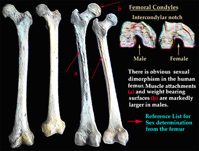
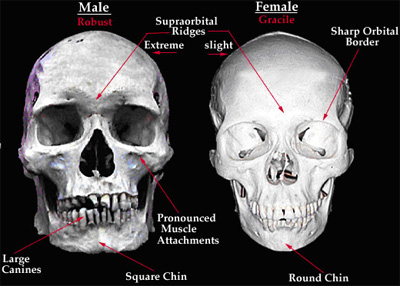

Clues in human bones can help determine the sex of skeletal remains. This is important because it helps establish the identity of the deceased individual. By assessing multiple characteristics in a skeleton, it is possible to estimate the sex of a person. However, in some cases the sex of a person cannot be determined easily because of human variation. The most important and reliable part of the skeleton for determining a person’s sex is the pelvis. The skull may also be used, but variation in skulls may produce conflicting results.
Babies are born with approximately 300 identifiably separate bones. Many of these fuse during growth. As a result, adult human skeletons normally have an average of 206 bones.
Human Female Pelvis
Human Male Pelvis

The most obvious difference between the human male and female skeletons is the pelvic region. Numerous features of the female pelvis distinguish it from the male pelvis; however, in general, the female pelvis appears shorter and wider than the male pelvis. In addition, the pelvic region of the male is usually larger and more rugged than the smaller and slighter female pelvic region.
Femurs from a Human Female (left) and a Human Male (right)

In general, males tend to be more muscular than females. Therefore, the muscle attachment sites and weight-bearing surfaces on male limb bones tend to be larger and more pronounced. Notice in the above photograph that the upper leg bone (femur) of the male (right) has a number of large ridges where the muscles attach while the female femur does not appear to have these ridges.
Human Skulls: Male and Female

The human skull differs in several distinct ways in males and females. The above photograph shows two extreme examples of cranial sex differences.